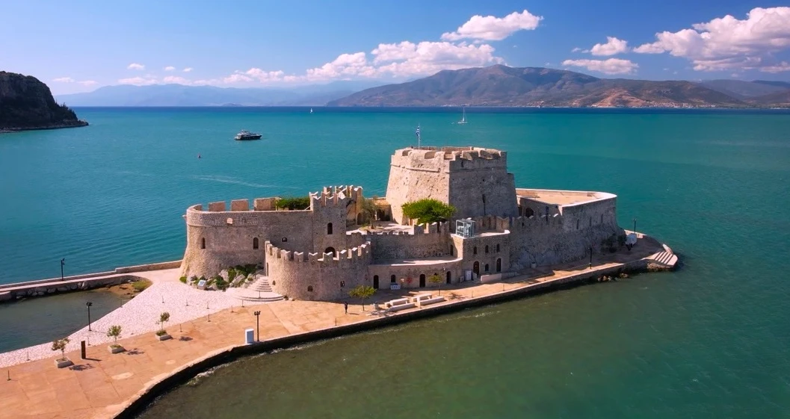
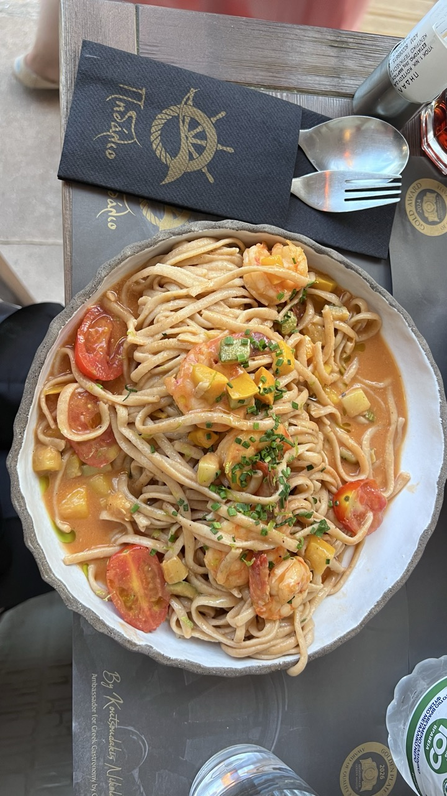

There are some places in Greece that are so ridiculously beautiful you immediately become suspicious. Nafplio is one of them.
Picture a gorgeous old town, mountains rising behind it, a Venetian castle perched above the rooftops, crystal-clear water stretching across the bay and enough superyachts bobbing about to make you wonder whether you've accidentally wandered into the wrong tax bracket.
And here's the thing: Nafplio looks almost too good to be true.
But we weren't just interested in somewhere that looked lovely in photographs. Could we imagine coming back again and again? Would we get bored after a week? Was it simply a pretty tourist town, or was there something more beneath the postcard-perfect exterior?
We decided to investigate.
Unfortunately, Nafplio made it rather difficult to find anything wrong with it.
DISCOVERING NAFPLIO'S HISTORIC OLD TOWN
Nafplio, on the eastern side of the Peloponnese, is often considered one of Greece's most beautiful towns. And having spent time exploring its streets, waterfront and surrounding coastline, we're not going to argue.
It also has an impressive place in Greek history. In 1829, Nafplio became the capital of the newly independent Greek state, before Athens eventually took over the job.
We began our exploration at Syntagma Square, the historic heart of the old town. This isn't simply somewhere to sit with a coffee and watch the world go by. The square witnessed important moments in modern Greek history, including the country's early parliamentary life and the arrival of King Otto, Greece's first modern king.
These days, the atmosphere is considerably more relaxed. Cafés and restaurants surround the square, people wander between the historic buildings, and visitors settle in to enjoy the sunshine. It's a lovely place to begin exploring, although we quickly discovered that history wasn't the only thing competing for our attention.
The streets themselves are gorgeous. Colourful doorways, attractive old buildings, little squares and narrow lanes seem to appear around every corner. There are boutiques selling jewellery, leather goods and all manner of things you absolutely didn't arrive intending to buy.
Nafplio doesn't really do the high street as we know it. Instead, shopping is part of the pleasure of wandering, with independent shops tucked into streets that practically demand you slow down and have a look.
BOURTZI CASTLE: NAFPLIO'S PICTURE-PERFECT WATERFRONT

One of Nafplio's most recognisable sights is Bourtzi Castle, sitting on a small island in the harbour. It's almost suspiciously well positioned. If somebody had deliberately placed a medieval castle there to create the perfect Instagram photograph, they couldn't have done a better job, but Bourtzi isn't just there to look pretty.
Built by the Venetians in the fifteenth century, the fortress helped protect the entrance to Nafplio's harbour. For centuries, ships approaching the town would have passed beneath the guns guarding the waterfront.
Today, things are considerably more peaceful. The guns have fallen silent, boats carry visitors across the bay and restaurants line the waterfront. It's one of those views that makes you stop walking, reach for your camera and wonder whether the photographs will do it justice.
The harbour is particularly attractive when viewed alongside the old town and the imposing Palamidi Fortress above it. Together, they create the sort of setting that makes you understand why Nafplio has such a reputation.
Of course, pretty scenery is one thing. We wanted to know whether there was enough here to keep us interested beyond a weekend. So we carried on exploring.
EXPLORING THE WATERFRONT AND ARVANITIA PROMENADE
One of the things we were particularly keen to discover was the Arvanitia Promenade, a coastal route that follows the edge of the Argolic Gulf beneath the towering rock face of Acronafplia.
It looked like exactly the sort of walk we'd enjoy: sea on one side, dramatic cliffs on the other, and plenty of opportunities to stop for photographs.
There was just one small problem.
We arrived at a gate that was very firmly telling us we couldn't go any further. Sections of the route had been closed because of rockfalls and landslides, which was rather inconvenient when we'd been looking forward to one of the town's best-known walks.
It was a reminder that even the most beautiful destinations occasionally have other plans for you.
Where the promenade is open, the scenery is well worth experiencing. The route is known for its views across the sea, the dramatic cliffs above and the small Panagitsa Church built into the rocks.
It's also the sort of walk where you keep stopping to take photographs. Twenty minutes later, you look at your watch and realise you've travelled approximately twelve metres.
We know the feeling.
SHOPS, BEACH BARS AND THE IMPORTANCE OF AN ICED CHOCOLATE
By midday, the Greek sunshine was making itself rather too comfortable. We'd been walking, exploring and photographing everything in sight, and the heat was beginning to take its toll.
Naturally, we responded with the sort of sensible decision that comes from being on holiday: we stopped for iced chocolate drinks.
We found Omulos, a beach-bar-style spot with hanging woven lanterns, crochet chairs and a wonderfully bohemian atmosphere. It looked as though somebody had been instructed to build a beach bar in Bali and had accidentally delivered it to Nafplio instead.
Not that we were complaining. With its relaxed styling and inviting seating, it was just the place to take a break from the heat and watch the world go by.
Sometimes, the best discoveries on a trip aren't the major attractions you've researched beforehand. They're the places you stumble across when you really need a sit-down, and after our iced chocolate intervention, Nafplio was looking particularly good again.
PIDÁLIO: ONE OF OUR FAVOURITE MEALS IN NAFPLIO

All that exploring had inevitably created another problem. We were hungry.
We hadn't set out to find the best restaurant in Nafplio. We simply wanted something delicious to eat. We came across Pidálio, tucked away from the main tourist trail, and liked the look of its relaxed atmosphere and nautical-themed interior. There was a rather impressive ship's wheel on the wall, which I photographed before I'd even looked at the menu. Priorities.
We were drawn to the menu and its take on familiar Greek ingredients, with dishes featuring flavours such as feta, aubergine, lamb, fish and pasta.
We were looking forward to a good meal, but what arrived exceeded our expectations. The food was beautifully presented, and the flavours were memorable without losing that connection to traditional Greek cooking.
We ate far too much, declared ourselves completely full and then ate the complimentary little dessert because apparently the words "I'm full" have never applied to pudding.
We've eaten in plenty of places around the Peloponnese, but Pidálio is somewhere we remember fondly.
WHERE TO STAY IN NAFPLIO: FILDISI
After a day spent pounding the streets in the Greek sunshine, having somewhere lovely to return to makes all the difference. We stayed at Fildisi Nafplio, and it turned out to be a particularly good find.
We'd read the reviews before arriving. Beautiful, modern and spotlessly clean, apparently, but a long walk into town and nowhere to park.
Well, we can report back from the scene: don't believe everything you read.
Fildisi has a beautifully minimalist style, with white, cream and polished concrete creating a bright, contemporary space that feels peaceful rather than cold. Our room was gorgeous, with a balcony overlooking Nafplio, stylish seating and glass balustrades. It was the sort of place that immediately makes you wonder why your own house doesn't look quite so good.
Then there's breakfast.
Rather than a conventional buffet, you choose from an impressive selection that includes Greek yoghurt, fruit, omelettes, meats and cheeses, pancakes, spinach pie, fresh orange juice and a variety of coffees. You select what you'd like and your preferred breakfast time, and it's all waiting for you when you arrive.
No buffet queues. No hovering hopefully beside the last croissant. Just beautifully presented food and excellent coffee.
The staff were charming and helpful, too.
Yes, it's around a 25-minute walk into town, but we didn't find that a hardship. And despite the reviews suggesting otherwise, we found plenty of free parking on the road immediately outside.
For us, Fildisi delivered exactly what we wanted: somewhere stylish, comfortable and peaceful to return to after exploring.
Would we stay again? Absolutely. It was a lovely base for our time in Nafplio, with beautiful accommodation and one of the best hotel breakfasts we've had in Greece.
PRACTICAL TIPS FOR VISITING NAFPLIO
If you're planning a visit, here's what we'd keep in mind.
- Allow at least two days. One day will give you a taste of the old town and waterfront, but an overnight stay lets you enjoy the evening atmosphere and explore at a more relaxed pace.
- Wear comfortable shoes. The best way to discover Nafplio is on foot, wandering through the old streets, browsing the shops and exploring the waterfront.
- Plan around the heat. If you're visiting during the hotter months, explore earlier in the morning or later in the afternoon. Leave the middle of the day for a leisurely lunch, a shaded café or an iced chocolate emergency.
- Check walking-route access. The Arvanitia Promenade may have closures due to rockfalls or landslides. Check current local advice before setting out.
- Consider parking before you arrive. If you're staying outside the old town, check your accommodation's parking arrangements. We found free roadside parking at Fildisi, despite reading reviews suggesting parking would be a problem.
- Make time for dinner. Nafplio has plenty to tempt you beyond the major sights. Pidálio is one we'd happily return to.
- Stay overnight if you can. Nafplio takes on a different character after dark, when the streets light up and the cafés and restaurants become part of the evening scene.
SO, IS NAFPLIO WORTH VISITING?
We came to Nafplio with a question. Was it genuinely somewhere special, or simply a very clever tourist set?
We'd seen the castle, explored the old town, wandered along the waterfront, discovered lovely places to eat and found accommodation we genuinely didn't want to leave. We'd also survived the midday heat, encountered a closed walking route and managed to spend a considerable amount of time getting absolutely nowhere because we kept stopping to take photographs.
But the biggest surprise was how comfortable Nafplio felt. It wasn't just beautiful to look at. It was somewhere we could imagine spending more time, finding favourite cafés, returning to restaurants and enjoying the simple pleasure of everyday life by the sea.
Is it perfect? No. Tourist numbers, summer heat and occasional access restrictions are all worth bearing in mind.
But it has history, character, lovely shops, a beautiful waterfront, good food and an atmosphere that makes you want to slow down.
And when you start wondering what a house here might cost, you know you've got a problem.
We came to Nafplio to find out whether it was worth the hype.
It was.
And that, dear reader, is how a simple sightseeing trip turns into another potential retirement plan.